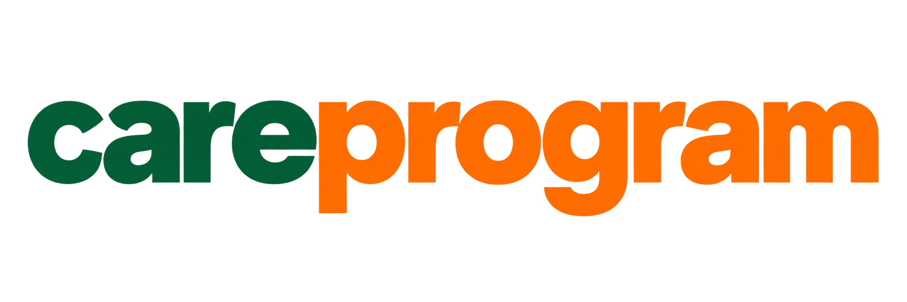
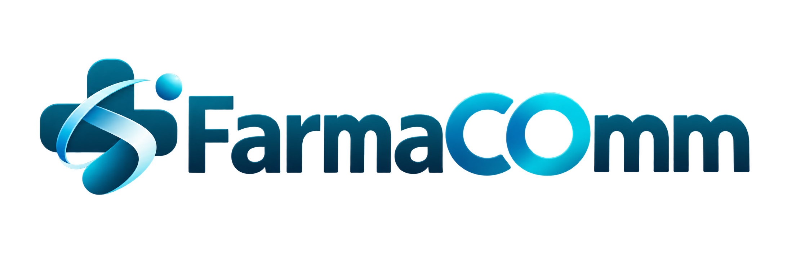
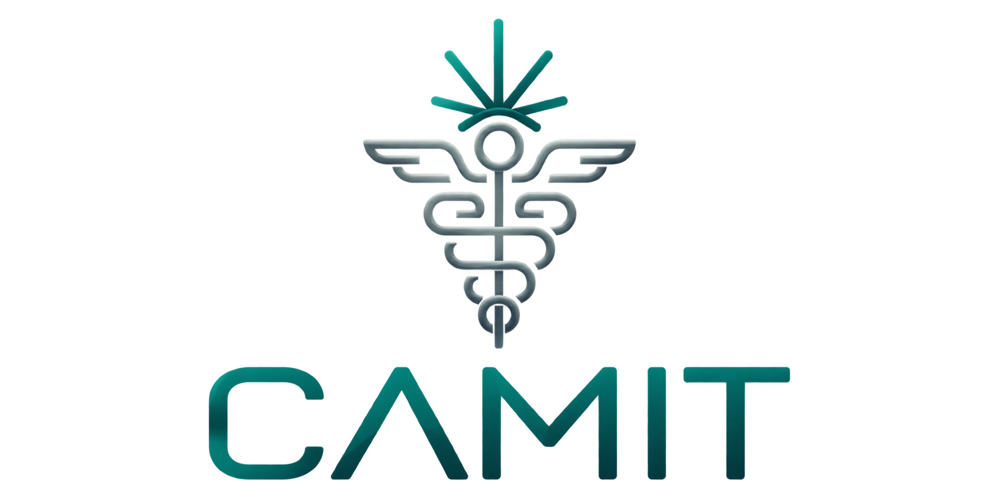
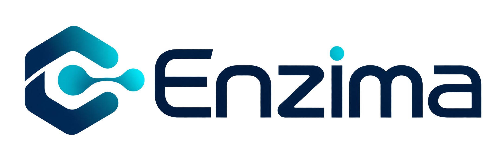
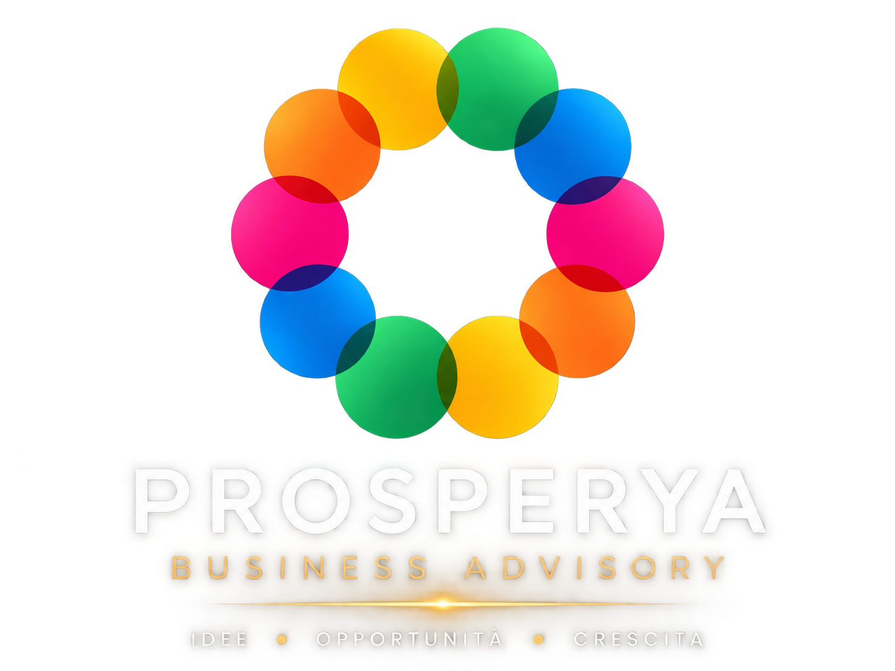

Patient Based — Continue Applied Research
La persona al centro.
Un ecosistema intorno.
PB-CARe coordina un sistema in cui identità, economia, clinica, conoscenza e ricerca restano distinte — e lavorano insieme.
Cos'è / PB-CARe
Tenere insieme.
Senza confondere.
PB-CARe non è una piattaforma e non è una holding. È il modello che coordina un ecosistema.
Ogni parte vive in un ambiente proprio, con dati propri e ruoli propri. Il sistema funziona perché nessuna parte pretende di essere tutto — e perché la persona resta il centro di ogni relazione.
Patient Based — Continue Applied Research
- 01 · la personail centro di ogni relazione
- 02 · l'economiaidentità, accesso e beneficiari — CareProgram
- 03 · la clinicaeventi e misure pseudonimizzate — FarmaCOmm
- 04 · la conoscenzaciò che la coorte mostra — EventiScientifici
- 05 · la ricercale domande che tornano alla cura — Enzima
- 06 · la tutelail diritto alla salute — Articolo 32
Per chi / Ingressi
Da dove
vuoi cominciare?
Puoi seguire il modello dall'inizio, o raggiungere subito il mondo che ti riguarda: ogni ingresso porta alla realtà giusta.
Il nome
resta fuori.
La parte economica sa chi sei. La parte clinica conosce ciò che accade nella cura. Le due informazioni non vengono fuse nello stesso luogo.
GiuliaFerri

La piattaforma / Identità e accesso
La connessione
ti appartiene.
Identità, nucleo, pagamenti, beneficiari e diritti di accesso: CareProgram è il livello della persona e dell'economia. Una connessione nasce quando serve — solo la persona decide, e ciò che viene revocato non si riapre da solo.
La relazione / Schema illustrativo
La connessione è autorizzata dalla persona.
Esempio del principio. Nessuna connessione reale viene modificata.
Scopri CareProgram (nuova scheda)Il servizio / Tutela legale del paziente
Articolo 32«La Repubblica tutela la salute come fondamentale diritto dell'individuo.»— Costituzione Italiana, art. 32
Quando l'accesso
ha bisogno di tutela.
Cure negate o ritardate, accesso urgente a terapie e diagnosi, ostacoli amministrativi: Articolo 32 offre assistenza legale per il diritto alla salute.
- cure negate o ritardateassistenza legale
- accesso urgente a terapie e diagnosiricorsi
- ASL · INPS · INAIL · ospedaliazioni legali
- minori, disabili, anzianipazienti fragili
- cure fuori regione o all'esterosupporto
- LEA e liste d'attesaverifica adempienza
Tracce separate, mai fuse
Una vita
è una traccia.
Le tracce restano pseudonimizzate e separate. Sotto soglia non si osserva nulla. Da cinque, la coorte mostra ciò che le tracce hanno in comune — osservazione, ipotesi, valutazione umana.
Molte vite,
una conoscenza.


la conoscenza trova una superficieEventiScientifici
dati di esempio
Ciò che conta, scorre nel tempo
La misura,
non la dichiarazione.
Una dichiarazione è una frase. Una misura è una sequenza osservabile: giorni, eventi, aderenza, interruzioni, esiti.
il percorso non si racconta — si osservapseudonimizzato · nel tempo
Il percorso / Cannabis medica
Un percorso clinico.
Da accompagnare.
CAMIT è la superficie dedicata al percorso cannabis medica: valutazione clinica, presa in carico, follow-up e teleassistenza.
Un'esperienza clinica specifica, con un sito e un ingresso dedicati.
Scopri il percorso CAMIT (nuova scheda)La superficie / Conoscenza condivisa
Sapere.
Condividere.
La conoscenza trova una superficie pubblica: formazione, confronto e divulgazione scientifica collegati all'ambiente FarmaCOmm.
Esplora EventiScientifici (nuova scheda)Il dipartimento / Ricerca e sviluppo

Una domanda.
Un nuovo ciclo.
Enzima è il dipartimento R&S di PB-CARe: trasforma osservazioni e domande in ricerca, progetti e applicazioni.
Osservazione · ricerca · progetto · applicazione · impatto.
Scopri Enzima (nuova scheda)
La relazione / Autonomia
Connessa.
Con la propria identità.
Prosperya è una società distinta e autonoma di business advisory, collegata alla costellazione relazionale dell'ecosistema.
Ha una propria identità, un proprio ambito di attività e un sito dedicato.
Conosci Prosperya (nuova scheda)Ciò che hai attraversato ha una struttura
Adesso lo riconosci:
è un sistema.
ogni cosa è già passata dal suo livelloruoli diversi, profondità diverse — un solo coordinamento
tutto ciò che hai attraversato
Una persona.
Un percorso.
Un sistema.
ora questa parola ha un significatoquesto è PB-CARe — Patient Based, Continue Applied Research
Parliamo / PB-CARe
Il prossimo passo
comincia da qui.
Per orientarti nel sistema, parlare di welfare, ricerca o di un progetto: contatta PB-CARe. La misura al posto della dichiarazione — ogni dato nasce strutturato, e serve la cura e la ricerca insieme.
la rete
PB-CARe srl · P.IVA 07242090822